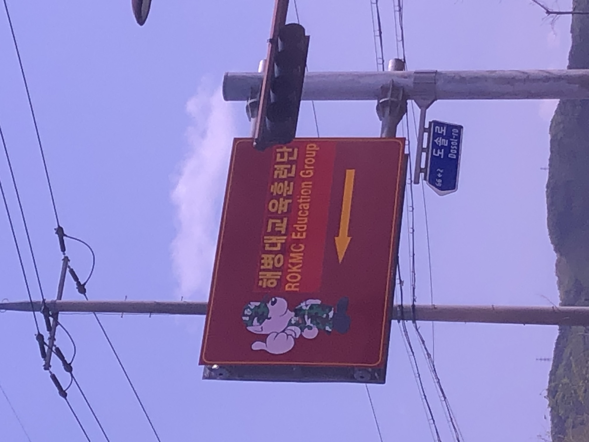
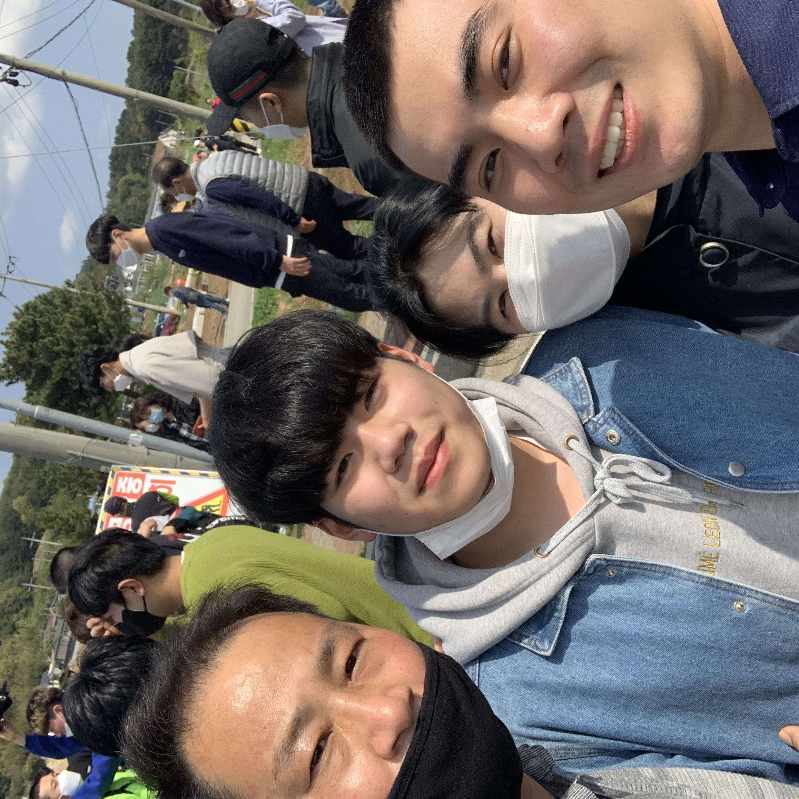

This web is restricted only to my family and some of my friends.
 
Apr.20.2020~
성인이 되고 난 후 저는 첫번째 벽을 마주 했습니다. 하지만 그 벽을 넘는건 단지 "시간문제"이기에 별로 긴장하진 않았습니다. 노력을 수반하지 않고 그저 시간만이 필요 조건인 문제는 그리 큰 장애물이 아니란걸 저는 알고 있거든요^^.
그래도 돌이켜보면 꽤 까다로운 벽인건 확실했습니다ㅋㅋㅋㅋ.
어쨌든 내 군 입대를 위해 분주한 아침을 끝마친 우리 네가족은 아빠 차에 몸을 싣고 포항으로 향했습니다. 가는 길에 아빠가 알고 있는 뷔페 휴게소에서 밥도 맛있게 먹고, 이래 저래 시간이 좀 지체됐지만 그래도 아빠의 운전 실력 덕에 무사히 공지된 입소 시간 안에 도착 할 수 있었습니다.
유일하게 군 생활을 한 아버지의 표정도, 그렇지 않은 엄마의 표정도 그리 밝을 수는 없는 그 때였습니다. 배웅하는 가족들을 뒤로하고 빨간 색 구조물에 노란 글씨가 써진 입구 아래로 다른 동기들과 차례차례 발 맞추어 입소했습니다.
생각보다 발이 어찌나 안 떨어 지던지...하하
들어간 뒤에는 소지한 현금과 휴대폰, 지갑, 시계 등등 훈련에 필요 없는 물품들은 모두 회수 당하고, 첫 일주일은 보급품 수령, 제식 교육을 했던 것으로 기억 합니다.
훈련단 기간 내내 보급품 안 잃어버리려고 갖은 노력을 했지만 결국 하나 둘 없어지더라는....... 아직 훈련병이라 긴빠이 정신도 없을텐데 대단한 자식들;;
그리고 전 그곳에서 분대장 훈련병으로서 우리 분대를 위해 갖은 노력을 했던 기억이 납니다 하하. 가장 어려웠던 것은 군가 외우기였는데요. mr도 없이 DI들이 불러주는 노래를 듣고 익혀야 하는게 얼마나 큰 고역인지...ㅋㅋㅋ (+노래도 드럽게 못불러)
어쨌든 이곳이 군대라는 것을 망각하면 안됩니다! 안돼면 될때 까지!! 해병대 정신으로 우리는 제식과 모든 군가를 익히고 모든 집총체조와 도수체조를 마스터 했습니다^^. 안돼는건 없습니다 세상에